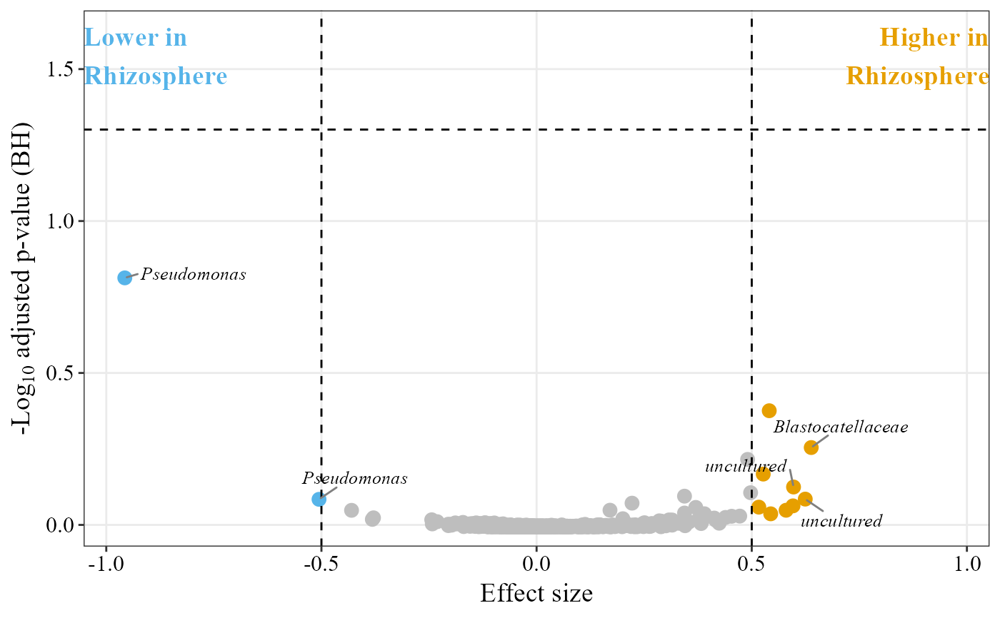

This function generates either an effect size plot or a volcano plot based on ALDEx2 results.
Source:R/aldex_volcano_plot.R
aldex_volcano_plot.RdThis function generates either an effect size plot or a volcano plot based on ALDEx2 results.
Usage
aldex_volcano_plot(
table,
metadata,
group_col,
type = "volcano",
col_inf = "#56B4E9",
col_sup = "#E69F00",
threshold_lower = -1.5,
threshold_upper = 1.5,
cond = NULL,
pval_threshold = 0.05,
p_adjust_method = "BH",
show_labels = TRUE,
taxa = NULL,
x_axis_title = NULL,
y_axis_title = NULL,
label_size = 3.5,
filter_uncultured = FALSE,
save_table = FALSE,
table_filename = "aldex_pval_effect.txt"
)Arguments
- table
Data frame with count data; columns represent samples, rows represent features.
- metadata
Data frame containing metadata for the samples.
- group_col
Name of the column in
metadatathat contains the experimental conditions.- type
Type of plot to generate:
"volcano"(default, volcano plot) or"effect"(effect-size plot). Case-insensitive.- col_inf
Color for points lower than threshold. Default
'#56B4E9'(Okabe-Ito blue, matching the package's 2-group default).- col_sup
Color for points higher than threshold. Default
'#E69F00'(Okabe-Ito orange).- threshold_lower
Lower threshold for effect size/difference (x-axis).
- threshold_upper
Upper threshold for effect size/difference (x-axis).
- cond
Name of the reference condition for the plot labels: positive values on the x-axis mean higher in
cond. DefaultNULL, the condition of the first sample intable.- pval_threshold
p-value cutoff for significance (default = 0.05), drawn as the dashed horizontal line.
- p_adjust_method
"BH"(default) or"none". With"BH", the y-axis and the significance cutoff use ALDEx2's Benjamini-Hochberg adjusted p-values (wi.eBH), since thousands of taxa are tested at once;"none"uses the raw p-values (wi.ep). ALDEx2 only computes the BH correction, so no other method is available here.- show_labels
Logical. Whether to display "Higher/Lower in cond" labels (for "effect" plot only, default is TRUE).
- taxa
Data frame with taxonomic information (required for "volcano" plot only).
- x_axis_title, y_axis_title
Titles for the x- and y-axis. Default
NULL:"Effect size"("effect") or log2 fold change ("volcano") on x, and the (adjusted) p-value on y.- label_size
Numeric. Font size of the taxon labels drawn on significant points in the "volcano" plot. Default
3.5.- filter_uncultured
Logical. If
TRUE, taxa whose name contains "uncultured"/"unculture" are still plotted as points but not labelled, keeping the volcano plot's text annotations to named taxa. DefaultFALSE.- save_table
Logical. If
TRUE, saves the ALDEx2 result table to disk. DefaultFALSE.effectanddiff.btware saved as ALDEx2 returns them (alphabetically second group minus the first); in the plot they are shown so that positive means higher incond.- table_filename
Character. File path/name for the saved table. Default
"aldex_pval_effect.txt".
Examples
table_path <- system.file("extdata", "tabla_bacteria.txt", package = "MicroBioMeta")
table <- read.delim(table_path, row.names = 1, check.names = FALSE)
metadata_path <- system.file("extdata", "metadata_bacteria.txt", package = "MicroBioMeta")
metadata <- read.delim(metadata_path, check.names = FALSE)
colnames(metadata)[1] <- "SampleID"
# group_col must have exactly two groups; Location has two
# (Rhizosphere and Roots) in the bundled example data
aldex_volcano_plot(
table = table,
metadata = metadata,
group_col = "Location",
type = "effect",
col_inf = "#56B4E9",
col_sup = "#E69F00",
threshold_lower = -0.5,
threshold_upper = 0.5,
cond = "Rhizosphere",
show_labels = TRUE
)
#> aldex.clr: generating Monte-Carlo instances and clr values
#> conditions vector supplied
#> operating in serial mode
#> computing center with all features
#> aldex.ttest: doing t-test
#> aldex.effect: calculating effect sizes
